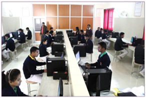
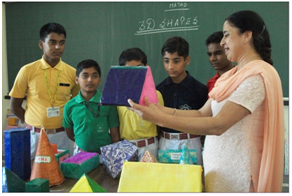
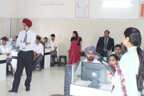
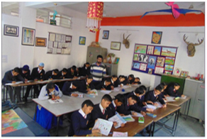
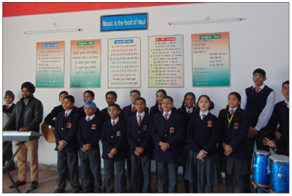
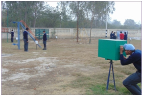
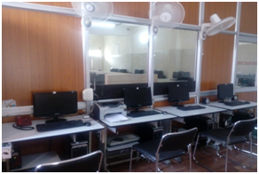
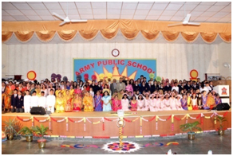
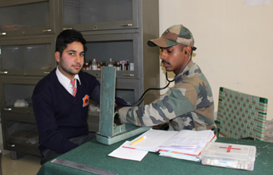

Our Infrastructure
Labs, library, sports fields and every facility in between.
Labs, library, sports fields and every facility in between.
Spread over a green campus near the Army Recruiting Office, Ferozepur Cantt.

The Army Public School, Ferozepur has well-equipped laboratories for Physics, Chemistry and Biology. Students are encouraged to use these laboratories to learn through experiments. Every year the latest instruments, specimens and charts are purchased for these laboratories.
The science teaching faculty continuously tries to inculcate skills (manipulative, inquiry, investigative, organisational, communicative), concepts, cognitive abilities, an understanding of the nature of science, and attitudes — curiosity, objectivity, precision, perseverance and collaboration — through well-maintained science labs.

The school has well-equipped and fully functional three computer labs for the sole purpose of imparting quality computer education to students of all streams at all levels.

The APS Library provides academic resources for all constituents of the school — students, faculty and administrative staff. It strives to make resources readily accessible to enhance and promote the total growth and development of the students, and endeavours to teach students how to utilise materials in a variety of formats so that they can continue lifelong learning.
The collection includes around 18,000 documents consisting of books and multimedia on a variety of subjects.

With the installation of Smart Boards, the typical classrooms have changed into a fun learning environment as they allow many different forms of media — photos, illustrations, maps, graphs and videos — to be displayed. The interactive nature of the smart board offers learners an opportunity to share and participate in the instructional process.

The school's Maths lab helps children develop an appreciation for Mathematics as a problem-solving tool in various fields. Activities done in the lab enable the child to consolidate the mathematical knowledge and skills acquired.
To increase their power of thinking, understanding and retention, we have a wide variety of working models — applications of trigonometry, linear equations in two variables, the Pythagoras theorem, properties of triangles, exterior angle properties and more.

Our English Lab is specially designed around the CBSE curriculum, with activity-based content for Classes I–XII. It prepares participants to communicate effectively in English, taking a learner through a step-by-step process of spoken English learning that includes grammar, sentence building, speaking and solving exercises. Its multimedia-based content supplements classroom teaching.

The art room is the place children are always willing to visit — it has the calm, positive and purposeful atmosphere that encourages creativity. The benefits are evident in children's confidence and self-esteem.

Considering music to be the food of the soul and an important aspect of education, the music room provides an excellent space for music lessons. It doubles as a rehearsal space for the school orchestra and choir, with a wide range of instruments — guitar, harmonium, tabla, electronic keyboard, drum and side drum.

With faith in the Ayurvedic system of medicine growing, the school's herbal garden makes the young generation aware of Indian herbs. It has been an extremely fruitful, creative and educative experience, with children evincing keen interest in planting herbs in their school campus.

Children are more interested in doing practical things than being confined to classroom teaching — so we have a Science Park with hands-on exhibits.

'A healthy mind and a healthy body go hand in hand.' Sports encompass more than just the benefit of physical activity; they increase the self-esteem and mental alertness of every participant. The school has well-maintained fields and courts and participates in all competitions organised at various levels.

To develop qualities of character, courage, comradeship, leadership, a secular outlook, the spirit of adventure and sportsmanship, the school provides a suitable environment for NCC cadets.

A Wi-Fi equipped Teachers' Resource Centre (TRC) is utilised by staff members for their academic work, along with any required input deemed important regarding their roles as teachers.

The MP Hall is the venue for most major events and activities, with a projector, sound system and other essentials. It can accommodate more than 850 people at a single time.

The school medical room is situated on the ground floor with easy access from the classrooms. It provides first aid and nursing care to students and staff members. A nursing assistant and an ambulance are available on all working days during school hours.